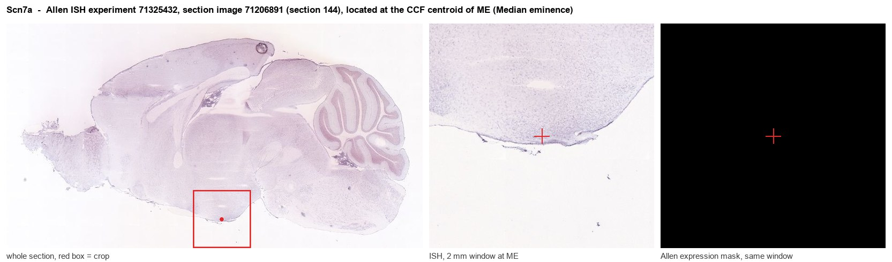
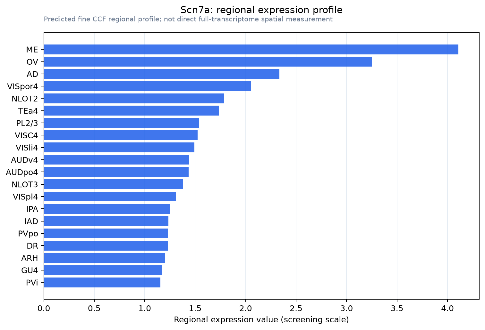

Scn7a
Sodium channel protein type 7 subunit alpha (Nax channel) (Sodium channel Nav2.3)
Spatial tier: RESTRICTED · Class: ION_CHANNEL · Top region: ME (Median eminence) · Positive regions: 23/554
43.9Discovery Score
41.5Targetability Score
CEvidence grade C
What this means: Scn7a: fine CCF profile is restricted toward ME (top regions: ME, OV, AD, VISpor4, NLOT2; 23 positive regions); direct spatial validation is still required.
Function in ME: evidence, prediction, innovation
- Gene function
- SCN7A encodes Nax (Nav2.3), an atypical member of the voltage-gated sodium channel family that has lost voltage sensing. Instead it behaves as a concentration-gated sodium leak channel that opens when extracellular sodium rises above roughly 150 mM. It is expressed in glia rather than neurons, is functionally coupled to the Na+/K+-ATPase and to lactate signalling, and constitutes the brain's sensor for body-fluid sodium, initiating salt aversion and sympathetic pressor responses.
- Region function
- The median eminence is the neurohaemal circumventricular interface at the base of the hypothalamus, where tanycytes and fenestrated portal capillaries let hypophysiotropic peptides such as GnRH, TRH, CRH, GHRH and dopamine reach the anterior pituitary.
- Published in this region
- inferred No region-specific literature found. Watanabe et al. 2006 localised Nax to the glial lamellate processes of the sensory circumventricular organs - subfornical organ and OVLT - and to ependymal cells, the same specialised glial class as median-eminence tanycytes; Nomura et al. 2019 showed that central Nax sensing of rising sodium drives sympathetically mediated blood-pressure elevation, and Sakuta et al. 2020 showed Nax-positive OVLT glia release epoxyeicosatrienoic acids, but none of this work examined the median eminence.
- Predicted function
- Prediction: Nax in median-eminence tanycytes is predicted to act as the sodium sensor of the neuroendocrine interface, translating rises in portal and cerebrospinal-fluid sodium into tanycyte lactate release and altered barrier permeability, and thereby coupling salt and dehydration status to the output of GnRH, TRH and CRH terminals. Tanycyte-restricted Scn7a deletion using Rax-CreERT2 is predicted to leave sodium appetite partly intact (since the sensory circumventricular organs still function) but to abolish the dehydration-induced remodelling of tanycyte endfeet and blunt the suppression of the reproductive axis and the rise in vasopressin that follow salt loading.
- Innovation
- ★★★★☆ 4/5 Nax sodium sensing is established in neighbouring circumventricular organs but never tested in the median eminence, where tanycyte Cre lines now make the experiment straightforward.
- Tools
- Scn7a/Nax knockout mice and the Nax-lacZ knock-in reporter (Noda lab); anti-Nax antibodies; no selective pharmacology, so genetics is required; Rax-CreERT2 and Gfap-CreER for tanycytes and astroglia; hypertonic saline loading and sodium-appetite assays as the physiological challenge.
- References
Direct evidence located at the region

Allen ISH experiment 71325432, section image 71206891 (section 144): the section that contains the CCF centroid of Median eminence according to the Allen image-to-atlas alignment (reference_to_image), with a 2 mm window around that point. Left: whole section, red box = window. Middle: ISH signal. Right: Allen's expression-mask view of the same window. open this image in the Allen viewer
Look it up yourself: Allen Mouse Brain ISH for Scn7aAllen reference atlas: ME (structure 10671)ABC Atlas MERFISH viewer(in the ABC Atlas choose dataset MERFISH-C57BL6J-638850-CCF, colour cells by gene "Scn7a" or by parcellation_substructure "ME")All genes confined to ME + 3-D brain
Direct spatial evidence
MERFISH REGION LOCATOR

Regional expression figure

Predicted WMB × fine-CCF profile; not direct full-transcriptome spatial measurement.
Spatial profile
Evidence and specificity
- Evidence status
- PREDICTED_FINE
- Direct sources
- None; predicted localization only
- Exclusive threshold
- 12 positive regions out of 554
- Spatial specificity
- 0.301
- Top-region fraction
- 0.065
- Filter status
- PASS
Interpretation limits
- Cell-type-to-region projection is imputed expression, not direct spatial measurement.
- Adult reference atlases do not establish stability across age, sex, strain, state, or disease.
- Transcript abundance does not guarantee protein abundance or genetic-tool performance.